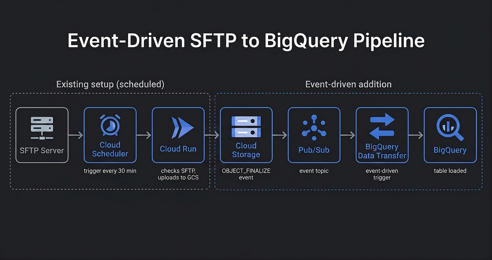

Event-driven ingestion on GCP
A third-party data file arrived via SFTP daily, somewhere between 8 AM and 12 PM. The first leg of the pipeline, Cloud Run polling the SFTP server and uploading the file to Google Cloud Storage, handled the variable timing fine with retry logic.
The second leg did not. BigQuery Data Transfer Service ran on a fixed cron schedule, which meant choosing between two bad options:
- Schedule it late (1 PM): reports are stale all morning, and someone will ask why
- Schedule it hourly: still adds latency on top of the SFTP retries, and wastes runs when the file hasn't arrived yet
The root issue: a scheduled trigger has no way to know the file has landed. The pipeline needed to react to what actually happened, not guess when it might.

The existing scheduled leg stays in place: Cloud Scheduler triggers Cloud Run every 30 minutes between 8 and 11 AM, and Cloud Run polls the SFTP server and uploads the file to GCS when it finds it.
The new event-driven leg replaces the cron-scheduled BigQuery transfer. When
Cloud Run writes the file to GCS, an OBJECT_FINALIZE notification
fires to a Pub/Sub topic. BigQuery Data Transfer Service is subscribed to that
topic and triggers immediately.
Why Pub/Sub notifications instead of a direct GCS trigger? BigQuery Data Transfer Service only supports Pub/Sub as its event source, so the GCS notification has to go through a topic. This adds one hop but requires no custom code: the subscription wires directly to the transfer config.
Filtering at the notification level. The Pub/Sub notification is scoped to a specific folder prefix and file suffix, so only the expected file triggers the transfer. Other writes to the bucket are ignored without any application logic handling them.
Setting this up requires the CLI. The GCS notifications UI was removed from
the Cloud Console, and the
documentation
now points exclusively to gcloud:
gcloud storage buckets notifications create gs://my-bucket \ --topic=my-topic \ --event-types=OBJECT_FINALIZE \ --payload-format=JSON \ --prefix=my-folder/ \ --suffix=.csv
The remaining tradeoff: the Cloud Run leg still polls on a 30-minute schedule. If the file lands at 8:01 AM, it won't be picked up until 8:30. Making that leg event-driven too, by triggering Cloud Run from an SFTP-side webhook or a Cloud Tasks queue, would close that gap entirely. That change is planned but not yet shipped.
Data now lands in BigQuery within minutes of the file arriving in GCS, rather than waiting for the next scheduled transfer window. The change eliminated the daily pattern of stale morning reports and the Slack messages that followed.
The pipeline also became more observable: a failed Pub/Sub delivery or a missed transfer now surfaces as a dead-letter event rather than a silent gap in the data.
← back to work